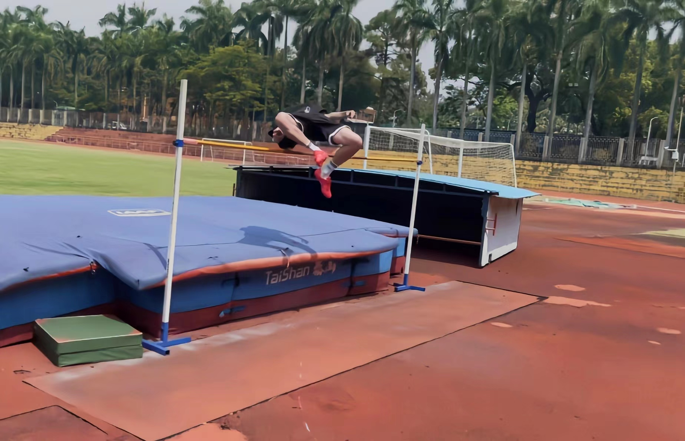
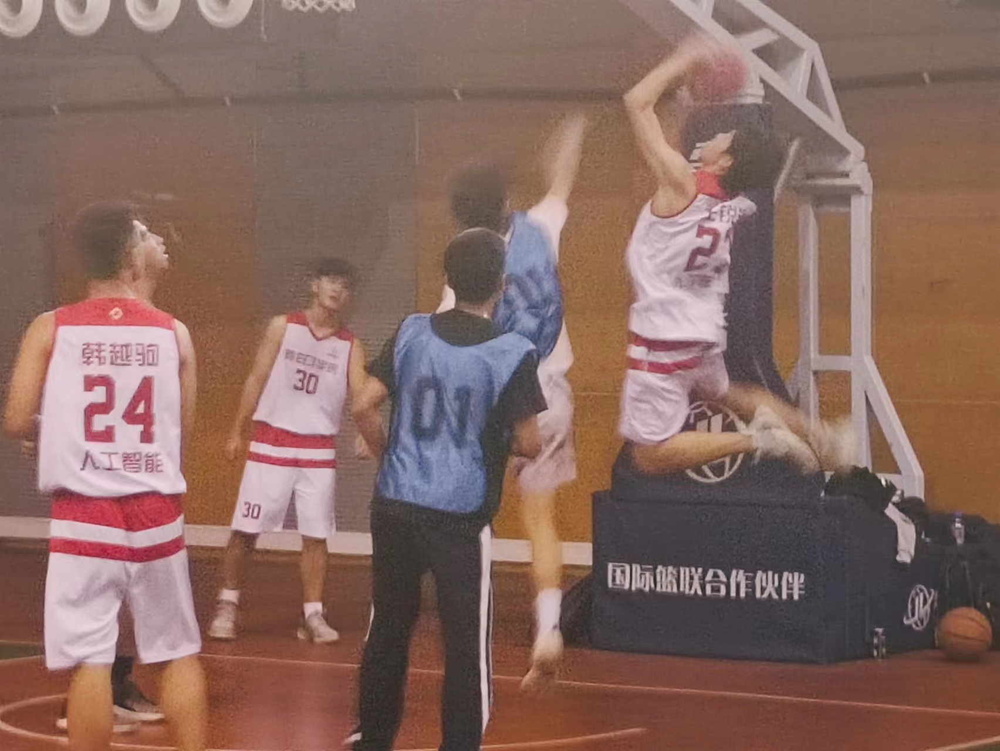
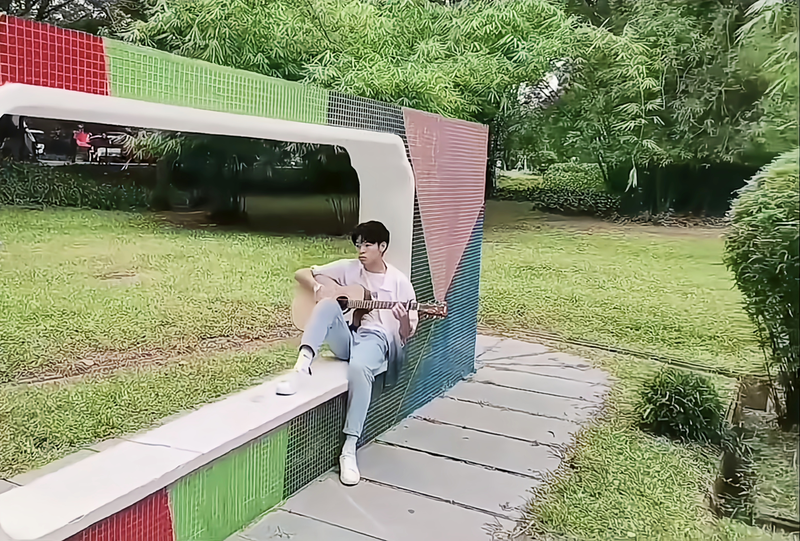

When I was in the third grade of primary school, I participated in high jump competition for the first time. I got the third mark, which just behind two contestants who are older than me. So far, I have pursued high jump for 12 years. I will take part in high jump competition every year and got good marks everytime. It has become my faith.
From my early age, I was always higher than my peer. It was no doubt that I was recommended to play basketball by my PE teacher. When I first played basketball, I found myself immersing in it! Especially the sound of basketball entering the net, is crisp and pleasant for me. I keep on playing basketball two to three times a week until now.


I began to play the guitar because of hard college entrance examination preparation period. It was such a nervous time that I nearly couldn't gasp for breath. To relax myself, I started to play the guitar in my spare time. I seemed to find a little pleasure during my guitar time. It accompanied me to get through that hard times. And we will be friend forever.